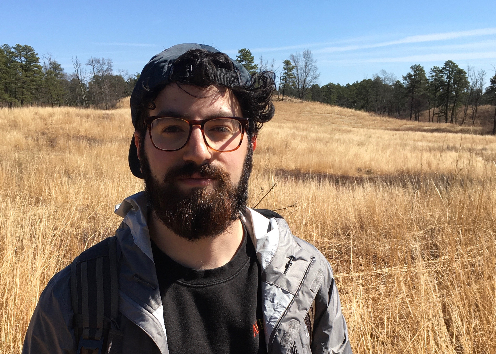

People¶
Principal Investigator¶
Brian Rose¶


Fearless leader of the Rose research group! I’m passionate about science, education, math, the Earth, open-source software, bicycles, building communities, music (stringed instruments especially), food, drink, and family. When I’m not working, I’m basically a hobbit. You can download my full CV here.
Graduate Students¶
Christopher Cardinale¶
{kind=link}


My research interests include the variability and vertical structure of the atmospheric energy transport and its role in polar warming on synoptic and climate timescales, and tropospheric-stratospheric coupling. Outside of work, I enjoy music, disc golf, second breakfast, and identifying trees while hiking.
Fangze Zhu¶
{kind=link}


I am enthusiastic about climate science in general. My research interests include multiple equilibria in the coupled climate system and causes of glacial-interglacial cycles. Using a hierarchy of climate models and the theories of nonlinear dynamical systems, my goal is to understand how every component of the climate system has worked together to produce the large climatic transitions in the Earth’s history. When I’m not working, I enjoy reading, walking, violin and clouds.
Yuan-Jen Lin¶
{kind=link}


I enjoy understanding the processes related to large-scale climate dynamics and climate change. My research interests include (1) uncertainty in climate sensitivity and its relation to the ocean (2) interactions between ocean, clouds, and radiation (3) time-evolving ocean circulation under climate change. My full CV can be found here.
Robert Ford¶


I am generally interested in using physics and computational modeling to understand Earth’s climate. My nonacademic interests include guitar and reading.
Alumni¶
| Name | Position in the Rose group | Where are they now? |
|---|---|---|
| Cameron Rencurrel | Ph.D. Student, 2014-2020 | Postdoc, Texas A&M |
| Lance Rayborn | MS student, 2015-2016 | Research Associate at Pacific Northwest National Laboratory |
| Duan-Heng Chang | Visiting research intern, summer 2019 | Undergradute student at National Taiwan University |
| Chyi-Rong Tsai | Visiting research intern, summer 2015 | Research Assistant, Institute of Sociology, Academia Sinica, Taiwan |
| Deborah McGlynn | Undergradute thesis, Fall 2014 | MS student at SUNY ESF |